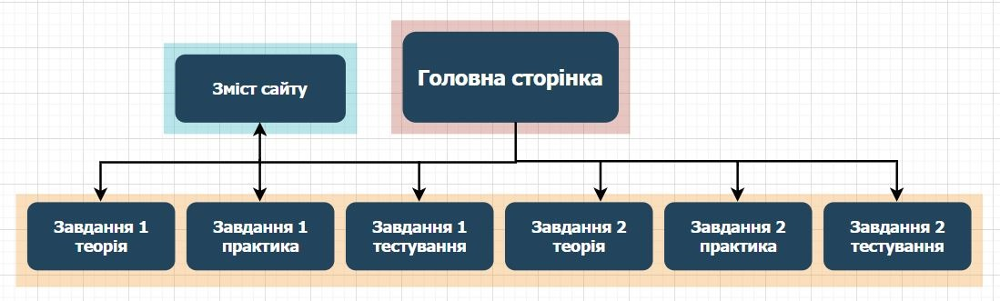

Сайт складається з наступних сторінок:
1) Головна сторінка
2) Зміст сайту
Містить коротку інформацію про сторінки сайту та мапу сайту.
3) Завдання 1 теорія
Сторінка містить теоретичну інформацію про работу в програмі Scilab, а також опис прикладів та як їх потрібно вирішувати. Також є інформація по Microsoft Excel.
4) Завдання 1 практика
Сторінка містить інформацію про реалізацію трьох прикладів у першому завданні на scilab та excel.
5) Завдання 1 тестування
Сторінка містить порівняння результатів отриманих за допомогою scilab та excel.
6) Завдання 2 теорія
Сторінка містить теоретичну інформацію про метод хорд, його застосування та реалізацію.
7) Завдання 2 практика
Сторінка містить інформацію про реалізацію метода хорд на мові C# та scilab.
8) Завдання 2 тестування
Сторінка містить порівняння результатів отриманих за допомогою чисельного методу на C#, scilab та перевірку за допомогою функції solve.
Мапа сайту:
